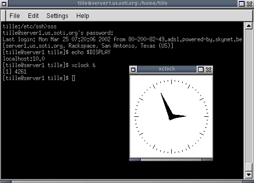

Удаленное выполнение приложений
Introduction to Linux. A Hands on Guide —
Введение в Linux. Руководство по работе
Введение
Существует несколько различных способов выполнения команд или запуска программ на удаленном компьютере, а также получение результатов их работы на рабочей станции, будь то текст или графика. Связь может быть безопасной или нет. Хотя советуют использовать защищенное соединение, а не транспортировать пароль по сети в открытом виде, мы обсудим некоторые практические приложения, использующие более старые (небезопасные) механизмы, т.к. они все еще полезны в современной сетевой среде, например, для устранения неполадок или работы экзотических программ.
Rsh, rlogin и telnet
Команды для удаленного входа и выполнения команд rlogin и rsh пришли из UNIX. Хотя они редко используются, т.к. это небезопасно, они по-прежнему поставляются почти с каждым дистрибутивом для обратной совместимости с UNIX-программами.
Кроме того, telnet по-прежнему широко используется системными и сетевыми администраторами. Telnet является одним из наиболее мощных инструментов для удаленного доступа к файлам и удаленного администрирования, позволяющий устанавливать связь из любой точки мира через Интернет. В сочетании с X-сервером, удаленные графические приложения могут быть отображены на локальной машине. В результате стираются границы между работой на локальном компьютере и с помощью удаленной машины.
По причине того, что всё соединение не зашифровано, позволяя telnet соединяться, вы берете на себя высокие риски, связанные с безопасностью. Для нормального удаленного выполнения программ рекомендуется использовать Secure Shell, или ssh. Далее мы будем обсуждать безопасный метод связи.
Однако, во многих случаях telnet до сих пор используется. Ниже приведены некоторые примеры, в которых почтовый сервер и веб-сервер тестируются на ответы.
Проверка того, что почтовый сервер работает:
[jimmy@blob ~] telnet mailserver 25 Trying 192.168.42.1... Connected to mailserver. Escape character is '^]'. 220 m1.some.net ESMTP Sendmail 8.11.6/8.11.6; 200302281626 ehlo some.net 250-m1.some.net Hello blob.some.net [10.0.0.1], pleased to meet you 250-ENHANCEDSTATUSCODES 250-8BITMIME 250-SIZE 250-DSN 250-ONEX 250-ETRN 250-XUSR 250 HELP mail from: jimmy@some.net 250 2.1.0 jimmy@some.net... Sender ok rcpt to: davy@some.net 250 2.1.5 davy@some.net... Recipient ok data 354 Enter mail, end with "." on a line by itself test . 250 2.0.0 g2MA1R619237 Message accepted for delivery quit 221 2.0.0 m1.some.net closing connection Connection closed by foreign host.
Проверка того, что веб-сервер отвечает на основные запросы:
[jimmy@blob ~] telnet www.some.net 80 Trying 64.39.151.23... Connected to www.some.net. Escape character is '^]'. HEAD / ;HTTP/1.1 HTTP/1.1 200 OK Date: Fri, 22 Mar 2002 10:05:14 GMT Server: Apache/1.3.22 (UNIX) (Red-Hat/Linux) mod_ssl/2.8.5 OpenSSL/0.9.6 DAV/1.0.2 PHP/4.0.6 mod_perl/1.24_01 Last-Modified: Fri, 04 Jan 2002 08:21:00 GMT ETag: "70061-68-3c3565ec" Accept-Ranges: bytes Content-Length: 104 Connection: close Content-Type: text/html Connection closed by foreign host. [jimmy@blob ~]
Это совершенно безопасно, потому что вы нигде не вводите имя пользователя и/или пароль для получения данных, которые вам требуются, поэтому никто не сможет стащить какую-нибудь важную информацию с кабеля.
X Window System
Особенности X
Как мы уже объясняли в Главе 7, система X Window поставляется с Х-сервером, который обслуживает графические приложения клиентов.
Важно понимать различие между X-сервероми и клиентскими X-приложениями. Х-сервер управляет дисплеем напрямую и несет ответственность за все входящие и выходящие данные, которые проходят через клавиатуру, мышь и монитор. X-клиент, со своей стороны, не имеет доступа к устройствам ввода и вывода напрямую. Он связывается с X-сервером, который обрабатывает ввод и вывод. X-клиент выполняет реальную работу, такую как вычисления значений, обеспечивает работу приложений и т.д. Х-сервер только открывает окна для обработки ввода и вывода для конкретного клиента.
При обычной работе (в графическом режиме), каждая рабочая станция Linux является X-сервером для себя самой. Все приложения, которые вы используете (например, Gimp, окно терминала, браузер, офисное приложение, инструмент проигрывания CD и т.д.) являются клиентами вашего X-сервера. Получается, что сервер и клиент работают на одной машине.
Такая клиент/серверная особенность системы X делает ее идеальной средой для удаленного выполнения приложений и программ. Поскольку процесс реально выполняется на удаленной машине, требуется мало мощности процессора на локальном хосте. Такие машины, которые работают только как сервера для X, называют X-терминалами и когда-то они были очень популярны.
Telnet и X
Если бы вы захотели использовать telnet для отображения графических приложений, работающих на удаленном компьютере, необходимо сначала дать удаленному компьютеру доступ к вашему дисплею (теперь уже X-серверу!) используя команду xhost, набрав ее как в примере ниже в окне терминала на вашем локальном компьютере:
davy:~> xhost +remote.machine.com
После этого, надо подключиться к удаленному хосту и сообщить ему об отображении графики на локальной машине, установив переменную окружения:
[davy@remote ~] export DISPLAY="local.host.com:0.0"
После завершения этого шага, любое приложение, запущенное в этом окне терминала будет отображаться на вашем локальном компьютере, используя удаленные ресурсы для вычислений, но ваши местные графические ресурсы (Ваш X-сервер) для отображения приложений.
Эта процедура предполагает, что у вас на компьютере уже установлены какие-нибудь X-сервера (XFree86, X.org, Exceed, Cygwin), и вам есть с помощью чего отображать изображения. Архитектура и операционная система клиентского компьютера не важны, если они позволяют запускать на нем Х-сервер.
Помните, что отображение окна терминала с удаленной машины также считается прорисовкой изображения.
Пакет SSH
Введение
Большинство систем UNIX и Linux в настоящее время запускают Secure SHell, чтобы избежать рисков для безопасности, которые давал telnet. На большинстве систем Linux будет работать версия OpenSSH, открытая реализация протокола SSH, обеспечивающая безопасную зашифрованную связь между непроверенными хостами в ненадежной сети. X-соединения при обычной установке автоматически передаются, но произвольные TCP/IP порты могут также быть переданы с использованием защищенного канала.
Клиент ssh подключается и регистрируется на указанном имени хоста. Пользователь должен предоставить данные о себе на удаленной машине, как указано в файле sshd_config, который обычно можно найти в /etc/ssh. Содержимое конфигурационного файла говорит само за себя, и по умолчанию включает наиболее используемы возможности. Если вам нужна помощь, вы сможете найти ее в man-страницах sshd.
Когда личность пользователя становится идентифицированной сервером, он либо выполняет данную команду, либо заходит на компьютер и предоставляет пользователю обычный shell на удаленной машине. Вся связь с удаленной командой или оболочкой будет автоматически зашифрована.
Сессия заканчивается, когда команда или оболочка на удаленной машине завершает работу, и все X11 и TCP/IP соединения оказываются закрытыми.
При подключении к хосту в первый раз, используя любую из программ, которые включены в коллекцию SSH, необходимо установить подлинность этого хоста и подтвердить, что вы хотите подключиться:
lenny ~> ssh blob The authenticity of host 'blob (10.0.0.1)' can't be established. RSA fingerprint is 18:30:50:46:ac:98:3c:93:1a:56:35:09:8d:97:e3:1d. Are you sure you want to continue connecting (yes/no)? yes Warning: Permanently added 'blob,192.168.30.2' (RSA) to the list of known hosts. Last login: Sat Dec 28 13:29:19 2002 from octarine This space for rent. lenny is in ~
Важно, чтобы вы ввели "yes", из трех символов, а не только "у". Все это изменяет ваш файл ~/.ssh/known_hosts, см. Раздел "Проверка подлинности сервера".
Если вы просто хотите проверить что-то на удаленной машине, а затем вернуться обратно к оболочке на локальном компьютере, вы можете передать команды, которые вы хотите выполнить удаленно, в качестве аргументов ssh:
lenny ~> ssh blob who jenny@blob's password: root tty2 Jul 24 07:19 lena tty3 Jul 23 22:24 lena 0: Jul 25 22:03 lenny ~> uname -n magrat.example.com
Пересылка X11 и TCP
Если параметру X11Forwarding присвоено значение yes на требуемом компьютере и пользователь использует X-приложения, устанавливается переменная среды DISPLAY, подключение к X11-дисплею автоматически пересылаются на удаленный сервер таким образом, что любая X11-программа, запускаемая из оболочки, будет проходить через шифрованный канал, и связь с реальным X-сервером будет создана из локальной машине. Пользователю. не надо вручную устанавливать DISPLAY. Отправка X11-соединений может быть сконфигурирована в командной строке или в конфигурационном файле sshd.
Значение для DISPLAY, установленное ssh, будет указывать на сервер, но с номером дисплея больше нуля. Это нормально и происходит потому, что ssh создает proxy X сервер на сервере (который запускает X-приложение клиента) для пересылки соединений через зашифрованный канал.
Все это делается автоматически, так что, когда вы набираете название графического приложения, оно отобразиться на вашем локальном компьютере, а не на удаленном хосте. В примере мы используем xclock, так как это небольшая программа, которая обычно установлена и идеально подходит для тестирования:
Рисунок 10.3. SSH X11 перенаправление

SSH также автоматически настроит X-полномочия на сервере. Для этой цели будут сгенерированы случайные авторизационные куки, SSH сохранит их на сервере и проверит, что какое-либо соединение несет эти куки и заменит их реальными, когда соединение будет установлено. Реальные аутентификационные куки никогда не передается на сервер (и никакие куки не отправляются так как есть).
Пересылка произвольных TCP/IP-соединений через защищенный канал может быть определена либо в командной строке, либо в файле конфигурации.
 Х-сервер
Х-сервер
Эта процедура предполагает, что у вас работает Х-сервер на стороне клиента, где вы отображаете приложение от удаленного хоста. Клиент может иметь иную архитектуру и операционную систему, чем удаленный хост в том случае, если он может запустить Х-сервер, например, Cygwin (который реализует X.org сервер для клиентов MS Windows и др.) или Exceed, должна быть возможность настроить удаленное соединение с любым компьютером Linux или Unix.
Проверка подлинности сервера
Клиент/серверная система ssh автоматически поддерживает и проверяет базу данных, содержащую идентификационную информация для всех хостов, которые когда-либо использовались. Ключи хостов хранятся в $HOME/.ssh/known_hosts, который находится в домашнем каталоге пользователя. Кроме того, автоматически проверяется файл /etc/ssh/ssh_known_hosts на наличие известных хостов. Любые новые хосты, автоматически добавляются в файл пользователя. Если идентификация хоста когда-либо изменяется, ssh предупреждает об этом и отключает аутентификацию по паролю, чтобы какой-нибуль троянский конь не получил пароля пользователя. Другая цель этого механизма заключается в предотвращении "человек-в-середине" атаки, которые могут быть использованы для обхода шифрования. В средах, где необходим высокий уровень безопасности, sshd даже может быть настроен для предотвращения входов на машины, чьи ключи хоста были изменены или неизвестны.
Безопасное удаленное копирование
Пакет SSH предоставляет scp в качестве безопасной альтернативой команды rcp, которая была популярна, когда только она и существовала. scp использует ssh для передачи данных, использует ту же самую проверку подлинности и обеспечивает такую же безопасность как ssh. В отличие от rcp, scp будет запрашивать пароль или парольную фразу, если они необходимы для аутентификации:
lenny /var/tmp> scp Schedule.sdc.gz blob:/var/tmp/ lenny@blob's password: Schedule.sdc.gz 100% |*****************************| 100 KB 00:00 lenny /var/tmp>
Любое имя файла может содержать хост и спецификации пользователя для указания, что файл должен быть скопирован на/с этого хоста. Копии между двумя удаленными хостами не допускаются. См. info-страницы для получения дополнительной информации.
Если вы предпочитаете использовать FTP-подобный интерфейс, используйте sftp:
lenny /var/tmp> sftp blob Connecting to blob... lenny@blob's password: sftp> cd /var/tmp sftp> get Sch* Fetching /var/tmp/Schedule.sdc.gz to Schedule.sdc.gz sftp> bye lenny /var/tmp>
Безопасное копирование или FTP GUI
Еще не чувствуйте себя комфортно в командной строке? Попробуйте возможности Konqueror для безопасного удаленного копирования, или установите Putty.
Проверка подлинности ключей
Команда ssh-keygen создает, управляет и преобразует ключи аутентификации для ssh. Она может создавать ключи RSA для использования протоколом SSH версии 1 и ключи RSA или DSA для использования протоколом SSH версии 2.
Обычно каждый пользователь, желающий использовать SSH с аутентификацией RSA или DSA, выполняет команду единожды для создания ключей аутентификации в $HOME/.ssh/identity, id_dsa или id_rsa. Кроме того, системный администратор может использовать ее для генерации ключей хоста системы.
Обычно эта программа генерирует ключ и опрашивает файл, в котором он хранится. Открытый ключ хранится в файле с тем же именем, но добавляется расширение .pub. Также программа запрашивает пароль. Пароль может быть пустым, что указывает на то, что его нет (ключи хостов должно быть с пустым паролем), или это может быть строка произвольной длины.
Не существует способа восстановить потерянный пароль. Если фраза утеряна или забыта, новый ключ должен быть создан и скопирован в соответствующие открытые ключи.
Мы изучим ключи SSH в упражнениях. Вся информация может быть найдена в man- или info-страницах.
VNC
VNC или Virtual Network Computing, на самом деле система удаленного дисплея, которая позволяет просматривать рабочую среду не только на локальной машине, на которой он запущен, но и из любой точки Интернет и с самых разных машин и архитектур, в том числе MS Windows и некоторых дистрибутивов UNIX. Можно, например, запустить MS Word на компьютере с Windows NT и отобразить результ на вашем рабочем столе Linux. VNC обеспечивает серверы также как клиентов, поэтому противоположное также работает, что можно использовать для отображения Linux программ для клиентов Windows. VNC, вероятно, самый простой способ получить X соединения на ПК. Следующие характеристики показывают, чем VNC отличается от обычного Х-сервера или коммерческих реализаций:
- Ни одно состояние не хранится на стороне зрителя: вы можете покинуть свой стол и возобновить работу с другого компьютера с того места, где вы остановились. Когда вы запускаете X-сервер, а также происходят сбои или перезагрузки ПК, то все удаленные приложения, которые вы запустили, прекращают работать. А вот VNC они продолжат свое выполнение.
- Это маленькая и простая программа, не требующая установки; если потребуется, может быть запущена с дискеты.
- Платформенно независима с Java-клиентом, работает в виртуальной среде, которая поддерживает X.
- Разделяема: один рабочий стол может отображаться на множество зрителей.
- Свободна.
Более подробную информацию можно найти на man-страницах (man vncviewer) или на веб-сайте VNC.
Протокол rdesktop
Для того, чтобы облегчить управление хостами MS Windows, новые дистрибутивы Linux поддерживают Remote Desktop Protocol (RDP), который реализован в клиенте rdesktop. Протокол используется в ряде продуктов Microsoft, включая Windows NT Terminal Server, Windows 2000 Server, Windows XP и Windows 2003 Server.
Руководство man rdesktop предоставляет больше информации.
Cygwin
Cygwin обеспечивает существенную функциональность UNIX на системах MS Windows. Помимо предоставления утилит командной строки UNIX и графических приложений, она также может быть использована для отображения рабочего стола Linux на компьютере с MS Windows, с помощью удаленного X. Из оболочки Bash Cygwin, введите команду
/usr/X11R6/bin/XWin.exe -query your_linux_machine_name_or_IP
Соединение по умолчанию запрещено. Вы должны изменить конфигурацию X Display Manager (XDM) и, возможно, конфигурацию X Font Server (XFS), чтобы включить этот тип соединения, где вы получите экран входа на удаленной машине. В зависимости от вашего менеджер рабочего стола (Gnome, KDE, другие), вам, возможно, придется изменить некоторые настройки и там.
Если вам не нужно отображать весь десктоп, вы можете использовать SSH в Cygwin, так же, как описано в Разделе "Пакет SSH", без всякой суеты по редактированию конфигурационных файлов.